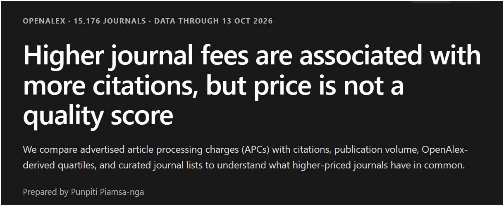

ค่าตีพิมพ์ การอ้างอิง และโอกาสที่อาจไม่เท่ากันในวงวิชาการ


“อยากดัง ต้องเก่ง และรวยด้วย” เป็นคำถามติดตลกที่ผมเริ่มสงสัยเมื่อมองระบบการเผยแพร่งานวิจัย สมัยก่อน การทำวิจัยให้ดี ตีพิมพ์ในวารสารที่มีชื่อเสียง และมีคนอ่านหรืออ้างอิงก็ดูเป็นเส้นทางสู่ความสำเร็จในวงวิชาการ แต่บางครั้งนักวิจัยยังต้องมีเงินจ่าย ค่าธรรมเนียมตีพิมพ์บทความ หรือ APC ด้วย
ผมจึงลองวิเคราะห์ว่าค่าตีพิมพ์ที่สูงขึ้นสัมพันธ์กับคุณภาพและการอ้างอิงของวารสารมากน้อยเพียงใด ผลที่สรุปในโพสต์พบแนวโน้มว่าวารสารที่มี APC สูงได้รับการอ้างอิงมากกว่า แต่ความสัมพันธ์นี้ยังไม่ทำให้เราสรุปได้ว่าการจ่ายแพงจะทำให้งานมีคุณภาพดีขึ้นหรือได้รับการอ้างอิงมากขึ้นเสมอไป
ความสัมพันธ์กับการอ้างอิงยังไม่ใช่เครื่องวัดคุณภาพ
วารสารที่มีชื่อเสียงอาจมีหลายปัจจัยร่วมกัน ทั้งคุณภาพของบทความที่รับ จำนวนผู้อ่าน เครือข่ายนักวิจัย และการมองเห็นผลงานในวงวิชาการ ปัจจัยเหล่านี้ต้องนำมาพิจารณาเมื่อตีความความสัมพันธ์ระหว่างค่าตีพิมพ์กับการอ้างอิง
ราคาจึงไม่ใช่คะแนนคุณภาพ และการเห็นความสัมพันธ์ในระดับวารสารไม่ได้รับประกันผลของบทความแต่ละชิ้น สิ่งที่ผมอยากชวนคิดต่อคือราคาอาจเกี่ยวข้องกับโอกาสที่ผลงานจะถูกมองเห็น โดยยังต้องแยกเรื่องนี้ออกจากการยืนยันว่าค่าตีพิมพ์เป็นสาเหตุของการอ้างอิง
ทุนค่าตีพิมพ์อาจกลายเป็นข้อได้เปรียบในการแข่งขัน
หากนักวิจัยสองคนทำงานคุณภาพใกล้เคียงกัน แต่คนหนึ่งมีทุนจ่ายค่าตีพิมพ์และอีกคนไม่มี โอกาสเผยแพร่ผลงานของทั้งคู่จะเท่าเทียมกันเพียงใด คำถามนี้สำคัญเมื่อระบบให้ความสำคัญกับจำนวนบทความ ชื่อเสียงวารสาร และจำนวนการอ้างอิง
ตัวชี้วัดเหล่านี้ถูกนำไปใช้ในการประเมินนักวิจัย การขอตำแหน่งทางวิชาการ และการจัดอันดับมหาวิทยาลัย ทรัพยากรสำหรับเผยแพร่ผลงาน จึงอาจเป็นข้อได้เปรียบเพิ่มเติม แม้นักวิจัยจะมีความสามารถทางวิชาการใกล้เคียงกัน
การสนับสนุน Open Access ควรพิจารณาคนที่รับภาระค่าใช้จ่ายด้วย
ผมยังเห็นคุณค่าของ Open Access ที่เปิดให้คนทั่วโลกเข้าถึงความรู้ได้โดยไม่ต้องเสียเงินอ่าน ขณะเดียวกันก็น่าพิจารณาว่า ต้นทุนของการเปิดเผยแพร่ความรู้นั้นตกอยู่กับใคร
เราใช้ทรัพยากรทำวิจัย ผลิตความรู้ ส่งบทความให้สำนักพิมพ์ และช่วยกันเป็น reviewer ซึ่งส่วนใหญ่มิได้รับค่าตอบแทน บางกรณียังมีค่าตีพิมพ์เพิ่มเติม นักวิจัยได้ผลงาน มหาวิทยาลัยได้อันดับ และสำนักพิมพ์ได้รายได้ ส่วนผู้จ่ายอาจเป็นมหาวิทยาลัย หน่วยงานให้ทุน หรือนักวิจัยเอง
ระบบประเมินควรพิจารณาทั้งคุณภาพและเงื่อนไขการเข้าถึงโอกาส
ผมยังเชื่อว่างานวิจัยที่ดีต้องเริ่มจากความสามารถและความคิดที่ดี แต่เมื่อการแข่งขันผูกกับตัวชี้วัดการเผยแพร่ ก็ต้องพิจารณาด้วยว่า การเข้าถึงทุนสนับสนุน มีส่วนกำหนดความสำเร็จมากเพียงใด นักวิจัยที่เก่งแต่ขาดทุนอาจเสียเปรียบคนที่เก่งใกล้เคียงกันแต่มีทรัพยากรมากกว่า
สิ่งที่อยากชวนตรวจสอบจึงเป็นกติกาการให้รางวัลของระบบ ว่ามุ่งสะท้อนคุณภาพงานวิจัยได้ดีเพียงใด และกำลังให้ความได้เปรียบกับผู้ที่มีทรัพยากรมากกว่าโดยไม่ตั้งใจหรือไม่ ผู้สนใจรายงานสามารถดูข้อมูลที่ผมอ้างถึงจากความคิดเห็นแรกของ โพสต์ต้นฉบับ